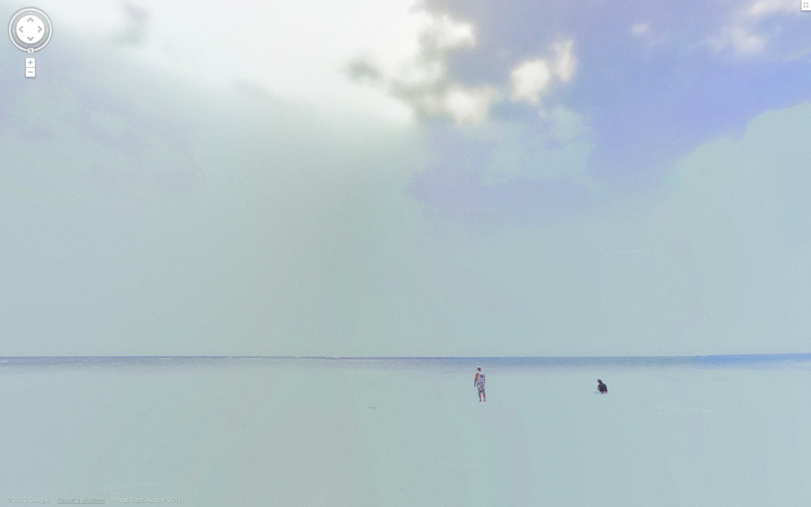

WINTHROP-YOUNG: "MORE THINGS IN THEORY THAN HEAVEN AND EARTH ARE DREAMING OF" (INTERVIEW)
by Melle Kromhout and Peter McMurray
IDEA
- Use Tumblr as my repost medium.
- Use writing as the primary focus for language in this project.
- Display different writing styles through images and as they the viewer gradually scrolls down the page a relationship between the different writing styles will be established. (example:thai writing is similar to khmer writing )

9 - Eyes google street view
Home